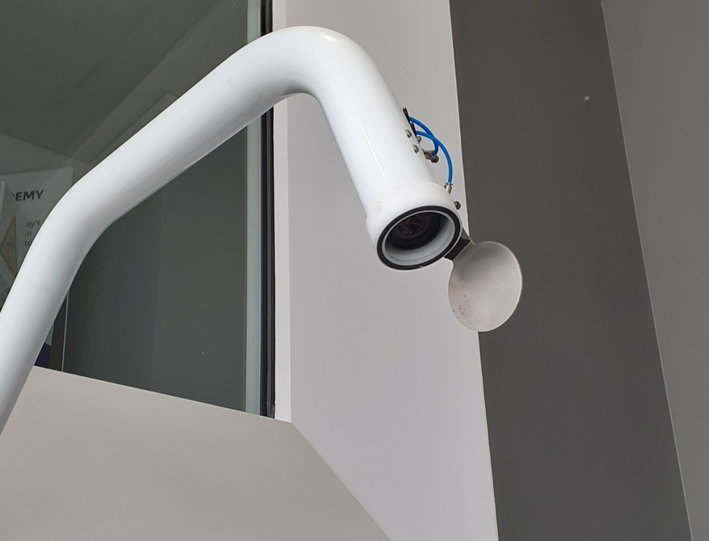
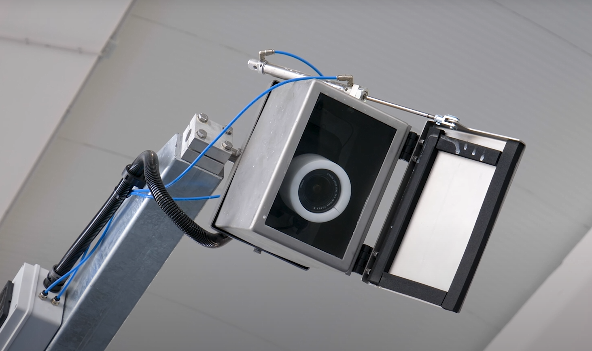
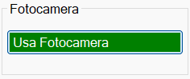
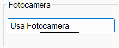
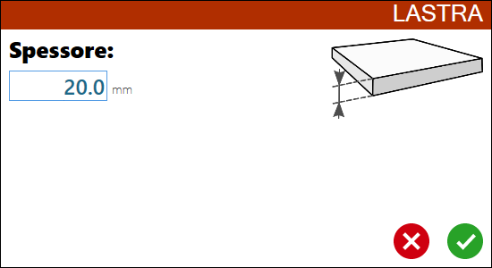
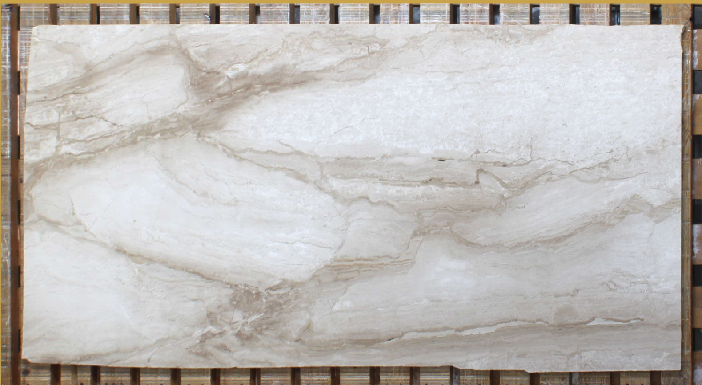
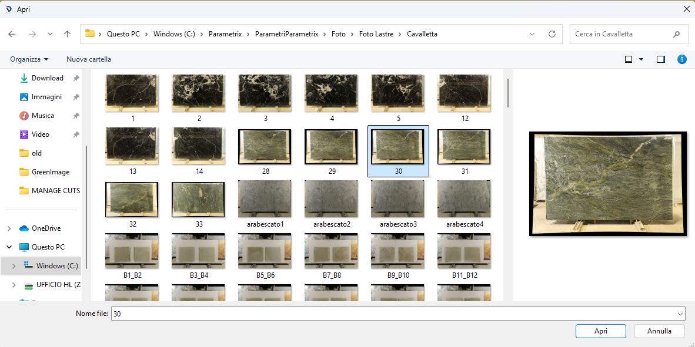
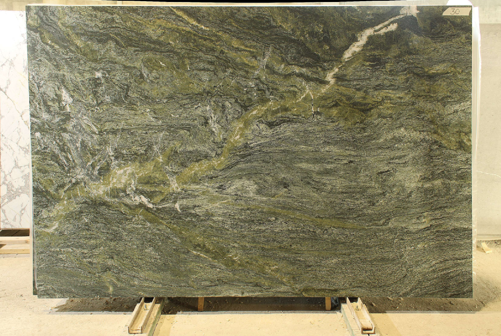

PHOTO
In Parametrix è possibile utilizzare l’immagine della lastra per programmare i pezzi e il taglio.
Per fare ciò è possibile utilizzare la fotocamera della macchina o caricare una foto da file.


VIDEO
FOTO
 |  |
Fotocamera.
 |  |
Caricamento da file.
 |  |